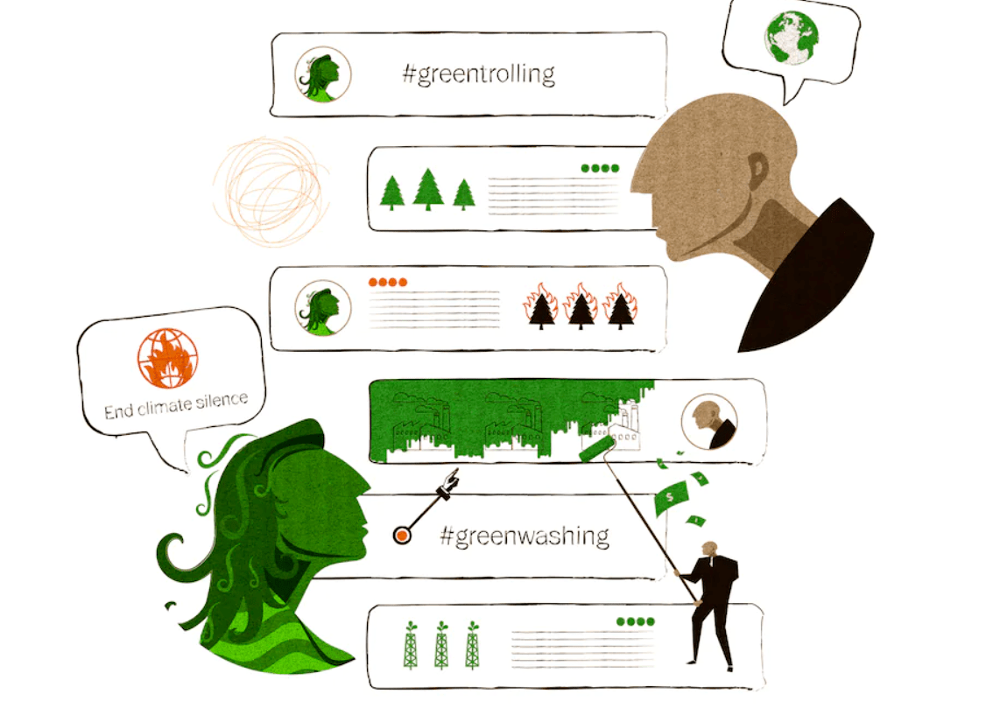

Comprehensive Natural Language Processing analysis for climate change
Comprehensive NLP analysis on twitter/reddit data for climate change
Full code available here
The main goal of this project is to conduct a comprehensive NLP analysis to understand the public opinon about climate change with various machine learning and NLP techniques. The project will be consist of 6 parts:
- Part 1: Data Prepration
- Part 2: Text Analysis
- Part 3: Sentiment Analysis
- Part 4: Text Clustering
- Part 5: Text Generation
- Part 6: Conclusion
The dataset used for this project is Twitter and Reddit data which is scraped using
Twint and
Pmaw packages.
From this analysis, I would like to explore and find the answers to below questions:
- What are the popular ideas/words used when people discuss climate change?
- How do people feel about climate change?
- In what context do people discuss climate change?
- Given the data, what would be the sentences generted by the neural network model?
Project skill goals
- Exploratory Data Analysis
- Text Analysis with N-grams and Wordcloud
- Sentiment analysis using exciting NLP model(RoBERTa)
- Latent Dirichlet allocation for topic modeling
- Text Generation with fine-tuning of GPT2
Used tools
- Twint, Pmaw, Numpy, Pandas, Matplotlib, NLTK, Sklearn, Scipy, Wordcloud, Gensim, pyLDAvis
Part 1 Data Preparation and Exploratory Data Analysis

The main datasets are scraped from Twitter and Reddit by using python packages ‘Twint’ and ‘Pmaw’. The social media platforms were chosen considering the three facts which are 1) Convenience to obtain a large dataset. 2) Open-source platform. 3) Freedom of speech/use level. Two datasets are scraped and finalized with a total of 104,195 observations. All datasets were scraped with the different time periods due to the matter of obtainable data size. The average sentence lengths for Twitter General and Reddit General datasets show a large difference. Twitter’s sentence length was 96 words per tweet on average and Reddit’s post had 189 words per post which can be explained by the platforms’ characteristics.
Data Processing
It is not difficult to find the media sources or articles that describe climate change with certain words such as ‘global warming or ‘temperature’. Whether these words are also being used by people or not can be verified with an NLP application. The analysis of popular ideas or terms used in the public discussion of climate change was performed with NLTK python package’s term frequency dictionary. All texts were separated into tokens and the tokens were counted for the frequency.
Part 2 Text Analysis with N-grams and Wordcloud
Figure 1 illustrates the top 30 most frequently used unigrams on both platforms. Predictably ‘climate’ and ‘change’ were the most popular words on both sides. However, there was a slight difference in the frequencies. ‘climate’ and ‘change’ were used in most of the posts on Twitter (approx. 50,000), Whereas, merely 20-30% of posts (12,500~17,500) included these terms on Reddit. This may be impacted by the ‘hashtag’ culture of Twitter; Possibly all users used ‘climate’ and ‘change’ for the hashtags.
Table 2 shows common and different unigrams that were used between the platforms among the top 30 unigram lists. As it’s shown, the majority of the top 30 unigrams were used on both platforms, on contrary, some words appeared on only one platform such as climatechange(Twitter), environment(Twitter), temperature(Reddit), and emissions(Reddit). However, when the top 30 unigram lists are expanded to the top 100 or top 200, the difference between the two platforms will no longer be distinct.
Figure 3 shows the word-cloud images created for efficient visualization. Besides the top 30 unigram list, some interesting words also can be found. For example, ‘australia’, ‘republican’, ‘covid’, and ‘research’ from Twitter’s word-cloud and ‘evidence’, ‘ocean’, ’model’, and ‘sea level’ from Reddit’s word-cloud. Although unigram analysis tells us some information on popular words used for climate change discussion, the list does not provide significant insight as it also includes some common words such as ‘like’, ‘also’, ‘see’, and ‘know’. Thus, to obtain more insights into word usage, the n-gram methodology was implemented.
Figure 4 represents the top 30 most frequently used bigrams for Twitter and Reddit texts. Compared to the unigram lists, the bigram lists include more meaningful and climate change-related words. The difference between the unigram and the bigram lists is that, unlike the unigram, only a few bigram words were overlapped between the platforms: fossil fuels, climate change, and global warming(described in Table 3). One finding to highlight is that bigrams for Twitter appear to contain a large number of ‘campaign expression’ which means encouraging others or delivering a message. ‘combat climate’, ‘climate action’, and ‘fight climate’ are the good examples. On the other side, bigrams from Reddit seem to be expressions for exchanging information or opinions such as ‘seal level’, ‘greenhouse effect’, or ‘carbon capture’.
Evidently, the bigram analysis provides us with more insightful information than the unigram analysis. Another interesting finding observed is that most of the bigrams of the Twitter dataset have a pattern that is a combination of the word ‘climate’ and a verb or an adjective. By contrast, bigrams for Reddit are mostly nouns.
Part 3 Sentiment analysis using exciting NLP model(RoBERTa)
The question ‘How do people feel about climate change?’ can be answered with the sentiment analysis. Sentiment analysis is an NLP technique to determine the emotion of a given text. There are several machine learning and deep learning models that can perform sentiment analysis such as Naïve Bayes, Support Vector Machine, and Neural Network models. Among all, RoBERTa model was selected for the implementation due to its convenient usability and high performance. RoBERTa(robustly optimized BERT model) is a neural network language model proposed by Google in 2018 (Yinhan, et al. 2018). The model is pre-trained on 160GB of texts to perform several downstream tasks including text classification.
Model implementation took the following six steps: 1) Set 3 level classes; Positive, Neutral, Negative. 2) Loaded the pre-trained model’s weights and tokenizer. 3) Tokenized the sentence by using RoBERTa Tokenizer. 4) If the sentence length is more than 50 words, it eliminated exceeding tokens, and If the sentence length was less than 50 words padding tokens were added. 5) Decoded the input token embedding with the RoBERTa model 6) Softmax activation function was used to produce the highest probability of each class.
The result of sentiment analysis is visualized in Figure 7. Over 55% of texts were classified as neutral classes on both platforms. The second biggest class was the negative class with 30%(Twitter) and 36%(Reddit). Lastly, the positive class was the smallest group with a ratio of 7%(Twitter) and 10%(Reddit). Between the two platforms, Reddit had more positive texts than Twitter and Twitter had more negative posts than Reddit. From this analysis, we can conclude that in general people discuss climate change in a neutral way, yet negative opinions are still larger than positive opinions.
Tables 4 and 5 contain examples of texts and their sentiments for both datasets. Due to the elimination of stopwords and punctuations, the sentences are in incomplete format. However, these examples generally show what words might have impacted the decision of the sentiment class. For example in Table 4, we can assume that the words ‘poorer’, ‘ruined’ might be important factors to determine its negative class, whereas the words ‘great’, ‘important’, and ‘nice work’ could be the main factors for its positive class decision. Most importantly, although it may be debatable depending on the reader’s subjectivity, the model accurately classified the sentiment of all texts when judged by the human eye.
Part 4 Latent Dirichlet allocation for topic modeling
Latent Dirichlet allocation (LDA) is a generative probabilistic model for collections of discrete data such as text corpora (Blei, D.M, 2003). LDA model allows us to find the hidden pattern in the text collections and cluster the words with several groups; it is often used for topic modeling. Although the LDA model does not consider the order of the words and grammatical role, it still provides a great insight into the main topics of the documents. For the pre-processing, lemmatization and simple preprocessing were conducted on the Twitter and Reddit texts. Then, each corpus was created including bigram and trigram words considering previous analysis results. Afterward, the texts were transformed into TF-IDF vectors to verify meaningful words; the words with a low TF-IDF score were excluded from the corpus.

Once the corpus was prepared, the LDA model was fitted into each dataset targeting to produce 10 topics. The result is visualized with the python package ‘pyLDAvis’ which helps to map the topics through dimensionality reduction (PCA) and displays the topics in the 2D space. Each circle is called a cluster which represents a topic. The distance between the circles can be interpreted as how different the topics are from one another. Figure 9 present all 10 topic clusters for both Twitter (left) and Reddit (right) dataset. The clusters in twitter’s topic map (Figure 9-left) appear to be largely overlapped in the upper right corner. Besides topic 1 and topic 2, the rest of the topics are possibly sharing similar words in many documents or topics are similar to each other.
Table 7 includes the top 15 words relevant to each topic for Twitter General Topic modeling. Corresponding to Figure 9, Most of the topics seem to include words that are either political or science-related except for topics 1 and 2. Topic 1 consists of the words that are not related to climate change or science, the words are belonging to more everyday terms.
On the other hand, Reddit topic clusters are relatively more separated than Twitter’s clusters. Topics 1, 2, 7 are distinct clusters and topics 3,4 ad 5,6 have slight overlaps and 8,9,10 are completely overlapped. According to Table 8, topic 1 seems to have non-climate change and science words which support the reason why topic 1 is very distant from all the other topics. Topics 3 and 4 appear to have words related to ‘science’ and ‘natural phenomena’ and topic 7 is also a very distinct cluster and includes words representing energy, chemistry, and system.
In summary, the LDA application on the datasets had very different results between the two datasets; Twitter texts had a lot of topics overlapped, while Reddit texts had relatively separated topics. It is possible the result may have been affected by the writing characteristic of each platform which is previously observed. The datasets are heavily focused on climate change, which may result in the lack of variety in topics and this can be an issue to produce interpretable results.
Part 5 Text Generation with fine-tuning of GPT2
As a final analysis, text generation with GPT2 model was conducted. GPT2 is an open-source NLP model introduced by OpenAI in 2019 which performs as a language model that generates, translates, and summarizes texts (Radford, et al. 2019). GPT models are pre-trained on 7,000 books and ready to be used as a pre-trained model. Model training from the scratch could produce a great performance, however, it requires extremely large data to train a GPT2 model and it also can face the gradient exploding issue.
The alternative solution is transfer learning which is a great compromise that maximizes the pre-trained GPT model’s advantage and still can customize the model based on the new dataset. In this project, given the GPT2 pre-trained model’s weights and tokenizer, fine-tuning was conducted with additional training on Twitter and Reddit datasets for the text generation.
Firstly, GPT2 tokenizer was used to prepare the embedding layer which transforms the texts into word embeddings with 3 additional tokens (startoftext, endoftext, pad). Since GPT2 takes an embedding size of 768, if any text exceeds this length, it was eliminated, and if the embedding size is smaller than 768 padding tokens were added to the sentence. The training proceeded with the parameter set described in Table 9
Despite several attempts to train the GPT2 on both Reddit and Twitter data, it resulted in one major issue: Gradient exploding due to the large size of data. The issue led to a shortage of memory and the training was no longer possible to proceed. To solve this issue, only 20,000 observations from the Twitter General Dataset were randomly selected and used for the fine-tuning.
The fine-tuning was successfully completed with the adjustment of data size, and the model’s text generator was tuned with parameters as described in Table 10. Since there was a high repetition of particular words, the repetition limit was set as 2 and the minimum sentence length was set to 10 words. Top-p value 0.85 was used to select the prediction tokens with only high probabilities by removing the long tail of low probability tokens. On the other hand, the temperature is a parameter that represents the model’s confidence in its top token choices. Lower temperature produces stable and high confident words. In this case, the temperature was set to 0.9 to produce a variety of sample texts. After adjustment of these parameters, the initial text ‘climate change is’ was fed into the model’s generator. Table 11 displays 10 sample sentences generated with fine-tuned GPT2 model.
One interesting finding is that most of the generated sentences included the word ‘real’. This is corresponding to the result with the bigram analysis where there were many bigrams in regards to the authenticity of climate change, such as ‘believe climate change’ or ‘climate change hoax’. Although some of the sentences are not grammatically correct, still most of them are in a complete format and have logical meanings, for example, sentence numbers 2, 3, 6, 7, 9. Some of the words observed in unigram and bigram analysis can also be found in the sentences: ‘global warming’, ‘climate action’, ‘energy’, ‘fossil fuels’. Overall, it can be said a fine-tuned GPT2 successfully generated ‘climate change’ related sentences.
Dicussion
Throughout the project, the findings that should be highlighted are following: 1) Bigram analysis had more meaningful information than Unigram analysis. 2) Global warming, fossil fuels, greenhouse, and carbon were the main subjects of the climate change discussion. 3) People discussed climate change in a neutral way in most cases but discussed it more negatively than positively. 4) the United Kingdom had the highest ratio of both positive and negative texts classes. 5) LDA topic modeling did not provide significant results due to a lack of variety in topics. 6) The fine-tuned GPT2 model generated climate change-related sentences successfully. However, there are some limitations of this project to address. Due to the instability of the scraping methodology, the dataset may not represent the entire market. The limitation of computational resources was another factor that ffected the quality of the analysis. In the future study, the development of data acquisition methodology, hyper-parameter experiments, and deeper analysis to improve LDA model implementation can be explored.
Conclusion
In this project, we have experimented and proved that various NLP applications can be utilised to understand people’s interactions and expressions in the field of climate change. Some of the NLP applications such as n-gram analysis, sentiment analysis, and text generation were successfully implemented and provided great insights into public opinions. On the other hand, topic modeling with the LDA model did not provide a significant result. This analysis can be beneficial in examining the progress of climate change awareness, and in situations where understanding public opinion regarding climate change proves important.In this project, we have experimented and proved that various NLP applications can be utilised to understand people’s interactions and expressions in the field of climate change. Some of the NLP applications such as n-gram analysis, sentiment analysis, and text generation were successfully implemented and provided great insights into public opinions. On the other hand, topic modeling with the LDA model did not provide a significant result. This analysis can be beneficial in examining the progress of climate change awareness, and in situations where understanding public opinion regarding climate change proves important.